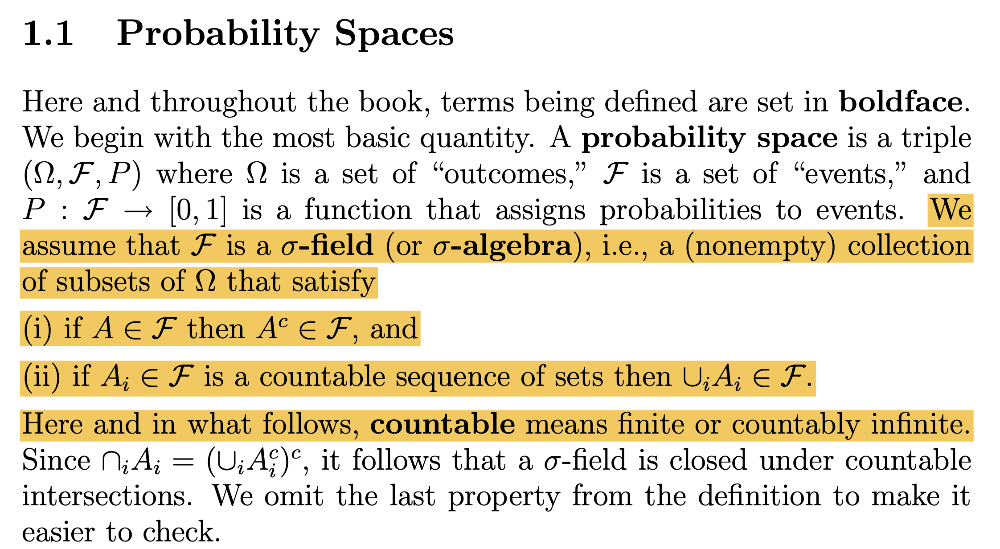

08wk-2, 09wk-1: 시그마필드
1. 강의영상
2. 지금까지의 Story
- 표본공간 \(\Omega\)의 임의의 부분집합 \(\Omega^*\)에 대한 확률을 정의하는 것은 생각보다 까다로운 일이다.
- \(\Omega\)가 유한집합일 경우 = 이건 쉽다.
- \(\Omega\)가 셀 수 없는 무한집합일 경우 = 이게 어렵다.
- 현대에는 \(\Omega\)가 셀 수 없는 무한집합일 경우 르벡메저를 사용한 방식이 표준으로 자리매김하였다. (인정하지 않는 사람은 거의 없다)
- 그렇다면 다시 “바늘이 하나 있는 시계” 예제를 고려하자. 편의상 \(\Omega=[0,1)\)로 가정하자. 아래의 명제는 참인가?
명제: \(\Omega\)의 임의의 부분집합 \(\Omega^*\)에 대하여, 르벡메저를 활용한다면 확률(=길이)을 모순없이 정의할 수 있다.
- 참이 아니다.
- 아니 저거 참으로 만들려고 우리가 지금까지 그 고생한 것 아니었어?
- 맞아요. 그래도 참이 아닌 걸 어떡해요.
- 비탈리집합이라는 게 있다고 합니다. (르벡메저로도 길이를 잴 수 없는 실수의 부분집합이죠)
- 그러면 이제 우리는 뭘 하느냐? 아래의 명제를 포기한다.
명제: \(\Omega\)의 임의의 부분집합 \(\Omega^*\)에 대하여 확률을 모순없이 정의할 수 있다.
- 대신에 아래를 밀고 나간다.
현실적인 선택: \(\Omega\)의 부분집합 \(\Omega^*\) 중 확률이 잘 정의되는 (그리고 우리가 관심이 있는) 집합만을 모아서, 그 집합에 대해서만 확률을 모순없이 정의할 수 있으면 족하다.
- 앞으로의 이야기는 확률이 잘 정의되는 집합들의 모임이 무엇인지에 대한 것이다.
- 스포일러1: 위의 문맥에서 말한 확률이 잘 정의되는 집합들로 이루어진 모임을 시그마필드라고 하고 보통 기호로는 \({\cal F}\)와 같이 표현한다.
- 사실 정확하게는 확률뿐 아니라 길이든 뭐든 “잰다”라는 행위가 잘 정의되는 집합들의 모임을 시그마필드라고 한다. (우리 강의에서는 그냥 확률이나 길이 정도만 상상하면 된다.)
- 따라서 시그마필드의 원소는 모두 “잰다”라는 행위가 잘 정의되는 집합이다. 그래서 시그마필드의 원소를 “잴 수 있는 집합(measurable set)” 이라고 부르기도 한다.
- 스포일러2: 이산형/연속형에서 흔한 시그마필드
- \(\Omega\)가 유한집합일 경우: 보통 “시그마필드 = \(\Omega\)의 모든부분집합” 이런식으로 정의
- \(\Omega\)가 셀 수 없는 무한집합일 경우: 보통 “시그마필드 = 보렐시그마필드” 이런식으로 정의
- 스포일러3: 이산형/연속형에서 흔한 확률정의방식
- \(\Omega\)가 유한집합일 경우 = 카운팅메저를 기준으로 원소마다 가중치(pmf)를 주어 확률을 정의한다.
- \(\Omega\)가 셀 수 없는 무한집합일 경우 = 르벡메저를 기준으로 밀도(pdf)를 주어 확률을 정의한다.
3. 시그마필드
A. motivation
- 시그마필드 = 잴 수 있는 집합들의 모임
- 그런데 “잴 수 있는 집합들의 모임” 이라는 개념을 어떻게 수학적으로 정의하지?
- 이제부터 그걸 알아보자.
- 이해 편의상 앞으로 “잴 수 있는 집합들의 모임” 대신에 “확률을 (모순없이) 잴 수 있는 집합들의 모임”으로 조금 특수화시켜서 읽어보자.
# 생각예제1
\(\Omega=\{H,T\}\)라고 하자. 아래집합들은 모두 우리가 흔하게 확률을 정의해서 사용했던 집합들이다.
\[\emptyset, \{H\}, \{T\}, \Omega\]
따라서 \({\cal F}\)을 아래와 같이 정의한다면 묶음 \({\cal F}\)가 합리적일 것이다.
\[{\cal F}=\big\{\emptyset, \{H\}, \{T\}, \Omega\big\}\]
(생각)
나도 합리적일 것 같은데?
이때 \({\cal F}\)는 집합들의 집합인데, 이러한 집합을 collection 이라고 한다.
#
# 생각예제2 – \(A \in {\cal F} \Rightarrow A^c \in {\cal F}\)
\(\Omega=\{H,T\}\)라고 하자. \({\cal F}\)을 아래와 같이 정의한다면 묶음 \({\cal F}\)는 합리적이지 않다.
\[{\cal F}=\big\{\emptyset, \{H\}, \Omega\big\}\]
(생각)
이러한 묶음이 의미하는건 “앞면이 나올 확률은 모순없이 정의할 수 있지만, 뒷면이 나오는 확률은 모순없이 정의하는게 불가능해~” 라는 뜻이다. 그런데 뒷면이 나올 확률은 “1-앞면이 나올 확률” 로 모순없이 정의할 수 있으므로 “앞면이 나올 확률이 모순없이 정의되면서” 동시에 “뒷면이 나올 확률이 모순없이 정의되지 않는” 상황은 없다.
(통찰)
\(A\)가 \({\cal F}\)의 원소라면, \(A^c\)도 무조건 \({\cal F}\)의 원소이어야겠네
#
# 생각예제3 – \(\emptyset, \Omega \in {\cal F}\)
\(\Omega=\{H,T\}\)라고 하자. \({\cal F}\)를 아래와 같이 정의한다면 묶음 \({\cal F}\)는 합리적이지 않다.
\[{\cal F}=\big\{ \{H\}, \{T\}, \Omega\big\}\]
(생각)
전체집합의 확률은 \(P(\Omega)=1\)로 정의할 수 있다. 그런데 전체집합의 여집합인 공집합의 확률을 정의할 수 없는건 말이 안되므로 공집합은 \(\cal F\)에 포함되어야 한다.
(팁) – 공집합일 확률이 0인 이유?
아래가 성립한다.
\[\emptyset \cup \Omega=\Omega\]
그런데 \(\emptyset \cap \Omega=\emptyset\) 이다. 따라서 \(\emptyset\)와 \(\Omega\)는 서로소. 따라서 위의 수식 에 덧셈법칙을 쓰면
\[P(\emptyset) + P(\Omega)=P(\Omega)\]
이 성립해야함. 그런데 전체확률은 1이어야 하므로 위의 수식은 다시 아래와 같이 쓸 수 있다.
\[P(\emptyset) + 1=1\]
따라서
\[P(\emptyset)=0\]
(통찰)
\(\Omega\)는 무조건 \({\cal F}\)의 원소일 수밖에 없다. (전체집합이 나올 확률이 1임은 너무 자명하고 \(P(\Omega)=1\)로 잘 정의되기 때문에 \(\Omega\)를 잴 수 없다는건 말이 안된다) 그와 비슷한 논리로 \(\emptyset\)도 무조건 \({\cal F}\)의 원소일 수 밖에 없다. (전체집합이 나올 확률이 1인것이 당연한것 처럼 사실 공집합이 나올 확률이 0인것도 위에서 살펴봤듯이 당연하거든요)
#
# 생각예제4
\(\Omega=\{1,2,3,4,5,6\}\)이라고 하자. \({\cal F}\)을 아래와 같이 \(\Omega\)의 모든 부분집합들의 모임으로 정의한다고 하자. 이러한 묶음 \({\cal F}\)는 합리적이다.
\[{\cal F}=\big\{ \emptyset, \{1\}, \{2\}, \dots, \{6\}, \dots, \{1,2,3,4,5\} \dots \Omega\big\}\]
(생각)
합리적인 것 같다. \(\Omega\)의 모든 부분집합에 대하여 확률을 모순없이 정의할 수 있다. 예를들면
- \(P(\Omega)=1\), \(P(\emptyset)=0\)
- \(P(\{1\})=\frac{1}{6}\)
- \(P(\{1,2,4\})=\frac{3}{6}\)
- \(P(\{2,3,4,5,6\})=\frac{5}{6}\)
- \(\dots\)
이런식으로 정의할 수 있다.
#
# 생각예제5
\(\Omega=\{1,2,3,4,5,6\}\)이라고 하자. \({\cal F}\)을 아래와 같이 정의한다고 하자. 이러한 묶음 \({\cal F}\)는 합리적이다.
\[{\cal F}=\big\{\emptyset, \{6\}, \{1,2,3,4,5\},\Omega \big\}\]
(생각)
이것도 합리적인 것 같다. 어떠한 특수한 상황을 가정하자. 주사위를 던져서 6이 나오면 살고 6이 나오지 않으면 죽는다고 하자. 따라서 던지는 사람 입장에서는 주사위를 던져서 6이 나오는지 안나오는지만 관심있을 것이다. 이 사람의 머리속에서 순간적으로 떠오르는 확률들은 아래와 같다.1
- 살수있다 => 1/6
- 죽는다 => 5/6
- 살거나 죽는다 => 1
- 살지도 죽지도 않는다 => 0
이러한 확률은 합리적이다. 즉 아래의 집합들만 확률을 정의한다고 해도, 확률을 잘 정의할 수 있을 것 같다.
\[\emptyset, \{6\}, \{1,2,3,4,5\}, \Omega\]
이 예제가 “현실적인 선택: \(\Omega\)의 부분집합 \(\Omega^*\) 중 확률이 잘 정의되는 (그리고 우리가 관심이 있는) 집합만을 모아서, 그 집합에 대해서만 확률을 모순없이 정의할 수 있으면 족하다.” 라는 문장에서 (그리고 우리가 관심이 있는) 에 해당하는 예제이다.
(통찰)
동일한 \(\Omega\)라고 하더라도 \({\cal F}\)를 다르게 정의할 수 도 있겠음.
#
# 생각예제6
\(\Omega=\{1,2,3,4,5,6\}\)이라고 하자. \({\cal F}\)을 아래와 같이 정의한다고 하자. 이러한 묶음 \({\cal F}\)는 합리적이다.
\[{\cal F}=\big\{\emptyset, \{1,3,5\}, \{2,4,6\},\Omega \big\}\]
(생각)
전체사건을 “주사위를 던져서 짝이 나오는 사건”, “주사위를 던져서 홀이 나오는 사건” 정도만 구분하겠다는 의미임. 합리적이다.
#
# 생각예제7
\(\Omega=\{1,2,3,4\}\)이라고 하자. 어떠한 이유로 인하여 1이 나올 확률과 2가 나올 확률에만 관심이 있고 나머지는 별로 관심이 없다고 하자. 그래서 \({\cal F}\)을 아래와 같이 정의했다고 하자. 이러한 묶음 \({\cal F}\)는 합리적이지 않다.
\[{\cal F}=\{\emptyset, \{1\}, \{2\}, \{2,3,4\}, \{1,3,4\}, \Omega \}\]
(생각 1)
\({\cal F}\)은 전체집합과 공집합을 포함하고 여집합에 닫혀있으므로 언뜻 생각해보면 합리적인듯 보이지만 그렇지 않다. 왜냐하면 \(\{1,2\}\)이 빠졌기 때문이다. 1이 나올 확률 \(P(\{1\})\)와 2가 나올 확률 \(P(\{2\})\)를 각각 정의할 수 있는데, 1 또는 2가 나올 확률 \(P(\{1,2\})\)을 정의할 때 모순이 발생한다는 것은 합리적이지 못하다. 왜냐하면 \(\{1\} \cap \{2\} = \emptyset\) 이므로
\[P(\{1\} \cup \{2\})=P(\{1\}) + P(\{2\})\]
와 같이 정의가능하기 때문이다. 따라서 집합이 아래와 같이 수정되어야 한다.
\[{\cal F}=\{\emptyset, \{1\}, \{2\}, \{2,3,4\}, \{1,3,4\}, \Omega, \{1,2\}, \{3,4\} \}\]
(통찰1)
서로소인 두 집합 \(A\),\(B\)가 모두 \({\cal F}\)에 포함되면, 그것의 합집합인 \(A\cup B\)도 \({\cal F}\)에 포함되어야한다.
(생각 2)
생각해보니까 \(\{2\}\)는 \(\{2,3,4\}\)의 부분집합이다. 그런데 \(P(\{2\})\)와 \(P(\{2,3,4\})\)를 각각 정의할 수 있는데
\[P(\{2,3,4\} - \{2\}) = P(\{3,4\})\]
를 정의할 수 없는건 말이 안된다. 따라서 \({\cal F}\)를 아래와 같이 수정해야 한다.
\[{\cal F}=\{\emptyset, \{1\}, \{2\}, \{2,3,4\}, \{1,3,4\}, \Omega, \{3,4\}, \{1,2\} \}\]
(통찰2)
\(A \subset B\)와 같은 포함관계에 있는 두 집합 \(A,B\)가 모두 \({\cal F}\)에 포함되면, 큰 집합에서 작은 집합을 차집합한 \(B-A\) 역시 \({\cal F}\)에 포함되어야한다.
(정리하면)
\(\Omega=\{1,2,3,4\}\)이라고 하자. 내가 관심이 있는 확률은 \(P(\{1\})\), \(P(\{2\})\) 밖에 없다고 하자. 이러한 확률들이 무모순으로 정의되기 위한 최소한의 \({\cal F}\)를 정의하라고 한다면? 좀 귀찮지만 아래와 같이 점점 \({\cal F}\)를 확장해야겠다.
0차수정: \({\cal F} = \big\{\{1\}, \{2\}\big\}\)?
1차수정: \({\cal F}=\big\{\emptyset, \{1\}, \{2\}, \Omega \big\}\)?
2차수정: \({\cal F}=\big\{\emptyset, \{1\}, \{2\}, \{2,3,4\}, \{1,3,4\}, \Omega \big\}\)?
3차수정: \({\cal F}=\big\{\emptyset, \{1\}, \{2\}, \{2,3,4\}, \{1,3,4\}, \Omega, \{1,2\}, \{3,4\} \big\}\)!
#
이제 슬슬 특징들을 모아보자
우리가 잴 수 있는 집합의 모임들 \({\cal F}\)라는 것은 답을 구체적으로 쓸 수는 없으나 현재까지 파악한 직관에 한정하여 아래와 같은 조건2들을 만족하는 collection이라고 “일단은” 생각할 수 있다.
- \(\Omega, \emptyset \in {\cal F}\)
- \(\forall A \subset \Omega: ~ A \in {\cal F} \Rightarrow A^c \in {\cal F}\)
- \(\forall A,B \subset \Omega\) such that \(A\cap B =\emptyset\): \(A,B \in {\cal F} \Rightarrow A \cup B \in {\cal F}\)
- \(\forall A,B \subset \Omega\) such that \(A \subset B\): \(A,B \in {\cal F} \Rightarrow B-A \in {\cal F}\)
이것은 우리가 “확률”이라는 개념을 올바르게 정의하기 위해서 필요한 최소한의 합의3이다.
여기에서 우리가 따져볼 것은 (1) 시그마필드의 조건으로 1~4이면 충분한지 (더 많은 조건들이 필요한건 아닌지) 그리고 (2) 우리가 있었으면 하는 조건들이 꼭 필요한 조건은 맞는지 (예를들면 한 두개의 조건이 다른 조건을 암시하는건 아닌지) 이다.
(충분할까?) 조건 1,2,3,4 정도를 만족하는 집합으로 시그마필드를 정의해도 충분할까? 좀 더 많은 조건들이 필요한건 아닐까? 예를들면 아래와 같은 조건들이 필요한건 아닌가?
- \(\forall A,B \subset \Omega:~ A,B \in {\cal F} ~ \Rightarrow A\cap B \in {\cal F}\)
- \(\forall A,B \subset \Omega:~ A,B \in {\cal F} ~ \Rightarrow A\cup B \in {\cal F}\)
- \(\forall B_1,B_2,\dots \subset \Omega\) such that \(B_1, B_2,\dots\) are disjoint: \(B_1,B_2,\dots \in {\cal F} \Rightarrow \cup_{i=1}^{\infty}B_i \in {\cal F}\)
- \(\forall A_1,A_2,\dots \subset \Omega\): \(A_1,A_2,\dots \in {\cal F} \Rightarrow \cup_{i=1}^{\infty}A_i \in {\cal F}\)
생각해보니까 이런게 있으면 좋을거 같다. (원래 좀 더 따져야하는데요, 이 수업에서는 그냥 이정도로 넘어갑시다)
혹시 더 필요한건 아닐까? 예를들어 아래도 가능하면 좋겠다.
- \(\forall A,B \subset \Omega:~ A,B \in {\cal F} \Rightarrow A-B \in {\cal F}\)
- \(\forall A_1,A_2,\dots \subset \Omega\): \(A_1,A_2,\dots \in {\cal F} \Rightarrow \cap_{i=1}^{\infty}A_i \in {\cal F}\)
그런데 사실 이런식으로 규칙을 추가하면 끝이 없을것 같다. 일단은 그래서 일단은 이정도에서 마무리하자. (그리고 이정도에서 마무리해도 된다는 것은 아래의 (필요할까?)를 읽으면 자연스럽게 깨닫게 된다)
(필요할까?)
규칙 1-10 이 모두 필요한건 아니다. 어떠한 규칙은 너무 강력해서 다른 규칙을 암시하는(imply) 경우도 있다. 예를 들면 규칙 8은 규칙 7,6,3 을 암시한다. 이런식으로 필요없는 규칙을 하나씩 제외하여보자.
1. 규칙8이 있으면 규칙7, 6, 3은 필요없다.
- 규칙7은 규칙8에서 집합들이 서로소인 특수한 경우이다.
- 규칙6은 \(A_1=A\), \(A_2=A_3=\dots=B\)로 두면 \(\cup_{i=1}^{\infty}A_i=A\cup B\)이므로 규칙8에서 나온다.
- 규칙3은 규칙6에서 두 집합이 서로소인 특수한 경우이다.
남은 규칙: 1, 2, 3, 4, 5, 6, 7, 8, 9, 10
2. 규칙2와 규칙8이 있으면 규칙5, 10은 필요없다. 드모르간 법칙에 의하여
\[A\cap B=(A^c\cup B^c)^c, \qquad \cap_{i=1}^{\infty}A_i=\big(\cup_{i=1}^{\infty}A_i^c\big)^c\]
이고, 우변은 여집합(규칙2)과 합집합(규칙8)만으로 만들 수 있기 때문이다.
(부연설명) 두 집합일 때와 무한히 많을 때를 차례로 보자.
\[ \begin{aligned} A,B\in{\cal F} &\Rightarrow A^c,\, B^c \in {\cal F} && (\text{왜? 규칙2})\\ &\Rightarrow A^c\cup B^c \in {\cal F} && (\text{왜? 규칙8})\\ &\Rightarrow (A^c\cup B^c)^c \in {\cal F} && (\text{왜? 규칙2})\\ &\iff A\cap B \in {\cal F} && (\text{왜? 드모르간 법칙: } (A^c\cup B^c)^c = A\cap B) \end{aligned} \]
\[ \begin{aligned} A_1,A_2,\dots\in{\cal F} &\Rightarrow A_1^c,\, A_2^c,\,\dots \in {\cal F} && (\text{왜? 규칙2})\\ &\Rightarrow \cup_{i=1}^{\infty}A_i^c \in {\cal F} && (\text{왜? 규칙8})\\ &\Rightarrow \big(\cup_{i=1}^{\infty}A_i^c\big)^c \in {\cal F} && (\text{왜? 규칙2})\\ &\iff \cap_{i=1}^{\infty}A_i \in {\cal F} && (\text{왜? 드모르간 법칙: } \big(\cup_{i=1}^{\infty}A_i^c\big)^c = \cap_{i=1}^{\infty}A_i) \end{aligned} \]
남은 규칙: 1, 2, 3, 4, 5, 6, 7, 8, 9, 10
3. 규칙2와 규칙8이 있으면 규칙9, 4도 필요없다. \(A-B=A\cap B^c\)인데 \(B^c\)는 규칙2로 만들고, 교집합은 2에서 본 것처럼 규칙2와 규칙8로 해결되기 때문이다. 규칙4는 포함관계가 있을 때의 차집합이므로 규칙9의 특수한 경우이다.
남은 규칙: 1, 2, 3, 4, 5, 6, 7, 8, 9, 10
규칙9, 즉 “\(A,B \in {\cal F}\) 이면 \(A-B \in {\cal F}\)”는 규칙2와 규칙8만으로 지울 수 있을까? 다시 말해 규칙2와 규칙8이 성립하면 규칙9는 저절로 성립할까? 열쇠는 아래 식이다.
\[A-B = A \cap B^c\]
(부연설명1-교집합을 쓰는 버전)
\[ \begin{aligned} A,B\in{\cal F} &\Rightarrow A,\, B^c \in {\cal F} && (\text{왜? 규칙2})\\ &\Rightarrow A\cap B^c \in {\cal F} && (\text{왜? 교집합은 규칙2와 규칙8로 만들 수 있다})\\ &\iff A-B \in {\cal F} && (\text{왜? } A-B = A\cap B^c) \end{aligned} \]
(부연설명2-교집합을 안 쓰는 버전)
\[ \begin{aligned} A,B\in{\cal F} &\Rightarrow A^c,\, B \in {\cal F} && (\text{왜? 규칙2})\\ &\Rightarrow A^c\cup B \in {\cal F} && (\text{왜? 규칙8})\\ &\Rightarrow (A^c\cup B)^c \in {\cal F} && (\text{왜? 규칙2})\\ &\iff A\cap B^c \in {\cal F} && (\text{왜? 드모르간 법칙: } (A^c\cup B)^c = A\cap B^c)\\ &\iff A-B \in {\cal F} && (\text{왜? } A-B = A\cap B^c) \end{aligned} \]
따라서 규칙2와 규칙8이 성립하면 규칙9는 저절로 성립한다. 규칙9는 지워도 된다.
- 결론: 규칙1, 규칙2, 규칙8만 있으면 나머지 7개의 규칙을 모두 imply 할 수 있다. (그리고 규칙1에서도 공집합을 뺄 수 있다)
- 규칙1: \({\cal F}\)는 \(\Omega\)를 포함한다.
- 규칙2: \({\cal F}\)는 여집합에 닫혀있다.
- 규칙8: \({\cal F}\)는 countable union에 닫혀있다.
B. Definition

(Def) Let \(\Omega\) be some set, and let \(2^{\Omega}\) represent its power set. Then a subset \({\cal F} \subset 2^\Omega\) is called a \(\sigma\)-field if it satisfies the following three properties:
- \({\cal F} \neq \emptyset\)
- \(A \in {\cal F} \Rightarrow A^c \in {\cal F}\)
- \(A_1,A_2,A_3\dots \in {\cal F}\) \(\Rightarrow\) \(\cup_{i=1}^{\infty}A_i \in {\cal F}\)
- 좀 더 편리하게 아래와 같이 기억하면 좋다.
시그마필드는 잴 수 있는 집합의 모임인데 아래와 같은 규칙을 만족해야 한다. (1) 전체집합을 포함한다. (2) 여집합에 닫혀있다. (3) 가산합집합에 닫혀있다.
- 참고1: 시그마필드라는 것은 유일하게 정의되지 않는다. 즉 동일한 \(\Omega\)에 대하여 정의할 수 있는 잴수있는 집합의 모임 \({\cal F}\)는 유일하지 않다. (그야 당연히 관심이 다르니까)
- 참고2: 시그마필드는 \(\Omega\)없이 단독으로 정의되지 않는다. 즉
\[{\cal F}=\{\emptyset, \{H\}, \{T\}, \{H,T\}\}\]
는 단지 그냥 시그마필드라고 주장하기 보다 \(\Omega=\{H,T\}\)에 대한 시그마필드라고 해야 정확한 표현이다.
- 참고3: 참고2에 따라서 \({\cal F}\) 단독으로 표기하는 것 보다 \(\Omega\)를 붙여서 \((\Omega,{\cal F})\)와 같이 쌍으로 표기하는게 더 합리적이다. 앞으로는 이러한 쌍을 measurable space 라고 부른다.